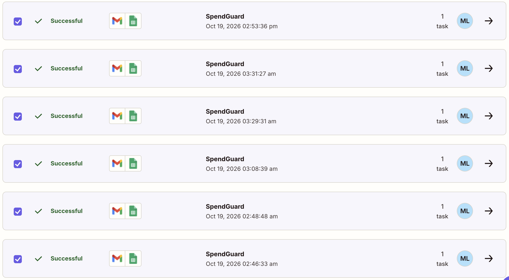
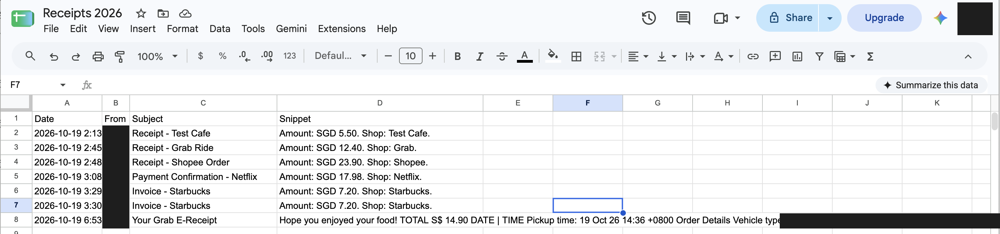
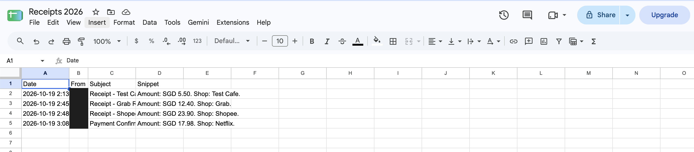
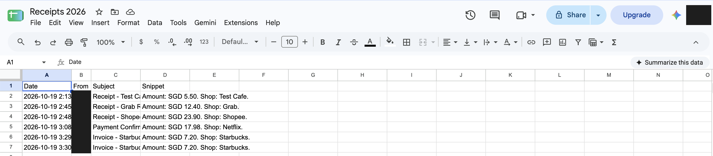

Ma Ma Lay (MML) · Built on Zapier’s free plan · Forked from my group’s page group3-week7-map
I wrote this card before the first run.
My agent card | SpendGuard | finished 19 Oct 2026, 2:10 AM 1. The job: Logs every receipt email into one Google Sheet, so that I (a person managing my own monthly budget) can see all my spending in one place and stop overspending 2. The trigger: A new Gmail email matching the search subject:(receipt OR "payment confirmation") 3. The tools: Gmail (New Email Matching Search, read only) and Google Sheets (Create Spreadsheet Row in my "Receipts 2026" sheet) 4. It must never: Send, reply to or delete any email. The Zap has only a read trigger and a "create row" action, with no Gmail send step 5. Where a person checks: I read the sheet every Sunday evening and compare each row with my bank app
Update, 19 Oct 2026, about 3:25 AM: after my tricky case (Step 2), I changed line 2’s search to subject:(receipt OR invoice OR "payment confirmation"). The rest of the card is unchanged.
| Part | Setting |
|---|---|
| Trigger | Gmail · New Email Matching Search on my personal Gmail account (not my SMU account) |
| Action | Google Sheets · Create Spreadsheet Row in “Receipts 2026”, Sheet1 |
| Columns | Date ← Gmail Date · From ← From Email · Subject ← Subject · Snippet ← Raw Snippet |
| Plan | One trigger, one action, free apps only, no card added. Every test email was sent to myself. |
I checked every row in my sheet against its run in Zap history and against the exported JSON. All six runs were Successful.
| Zap history run (SGT) | Search | Sheet row | Matches? | |
|---|---|---|---|---|
| 19 Oct, 2:46:33 AM | Receipt - Grab Ride · SGD 12.40 | v1 | 3 | Yes |
| 19 Oct, 2:48:48 AM | Receipt - Shopee Order · SGD 23.90 | v1 | 4 | Yes |
| 19 Oct, 3:08:39 AM | Payment Confirmation - Netflix · SGD 17.98 | v1 | 5 | Yes |
| 19 Oct, 3:29:31 AM | Invoice - Starbucks · SGD 7.20 (Gmail draft) | v2 | 6 | Duplicate |
| 19 Oct, 3:31:27 AM | Invoice - Starbucks · SGD 7.20 (sent) | v2 | 7 | Yes |
| 19 Oct, 2:53:36 PM | Your Grab E-Receipt · S$ 14.90 (a real GrabFood order) | v2 | 8 | Time shown in UTC |
Row 2 is the test record from the Zap editor, so it has no Zap history run.


What I expected, written before I sent it: an email with the subject “Invoice - Starbucks” is a real receipt, but it says “invoice” instead of “receipt”. I expected SpendGuard to miss it: no new row and no new run.
What happened: I sent it at 3:13 AM. After more than five minutes there was no new row and no new run, so my expectation was right.
I changed the search to subject:(receipt OR invoice OR "payment confirmation"), re-tested the trigger and published the Zap again. Then I sent a new “Invoice - Starbucks” email at 3:30 AM, and SpendGuard logged it (row 7). The exported JSON shows the search changing from v1 to v2 between run 3 and run 4. The 3:13 AM email stayed missed, because Zapier only treats emails that arrive after publishing as new.


This is my copy of Group 3’s map. My agent is highlighted in yellow; the other tasks are my group’s placements from class.
In Q1 (d) I argue that “Sort post comments” belongs in Agents run it, a person judges.
SpendGuard sits in AI alone, with checks (bottom left).
Is there a right answer? Yes. Each email either is a receipt or is not, and each logged row either matches the email or does not, so every output can be checked. In my runs, I could check every row against the original email and its Zap history record, for example Grab Ride SGD 12.40 (row 3), Shopee SGD 23.90 (row 4) and Netflix SGD 17.98 (row 5).
Must people and AI do it together, or can either do it alone? Either can do it alone. SpendGuard ran six times without any input from me, including a real GrabFood e-receipt that it logged at 2:53 PM while I was busy. I could also copy receipts into a sheet by hand; it would just take longer. No step in the process needs a human judgement.
I stay at the gate once a week: every Sunday evening I compare the sheet with my bank app. My runs showed me exactly what to check. First, missed receipts: a misspelled subject (“Pyament Confirmation”) and an “Invoice” email were both skipped before my fix. Second, duplicates: Gmail auto-saved my new Starbucks email as a draft at 3:29 AM, SpendGuard logged the draft, then logged the sent email again at 3:30 AM, so one coffee was counted twice. Third, wrong times: the real Grab receipt was logged as 6:53 (UTC) instead of 2:53 PM Singapore time.
SpendGuard may read matching emails and add rows on its own, but it cannot send, reply to or delete email, because the Zap has no such step. It would move to A person decides, AI alongside if I asked it to judge where I should cut my spending, because that has no single right answer. It would move to A person leads, AI inside if it could pay bills, because then I would have to sign off each payment before it goes out.
I agree with most of my group’s placements, including my own task, Consulting · Size a market, in Agents run it, a person judges, which matches the Week 7 deck. I would answer one question differently for CCH’s Marketing · Sort post comments, which we placed in AI alone, with checks. On “Is there a right answer?”, I would now say no. Building SpendGuard showed me what a real right answer looks like: an email either is a receipt or is not, and I could check every row against Zap history. A post comment is different. Whether a comment is a complaint, a joke or a sales lead often depends on tone and context, so two careful people could sort the same comment differently. That puts the task in Agents run it, a person judges: agents can sort the comments at scale, but a marketer should judge the unclear ones before the team acts on them. This is also where the Week 7 deck placed Product · Sort user comments.
SpendGuard fitted the job well: in six runs it logged every receipt email that matched its search, including a real GrabFood receipt, with no effort from me. It failed where exact keyword matching and plain copying break down: it skipped an “Invoice” and a misspelled subject, logged a Gmail draft as a second purchase, and copied a UTC time as if it were Singapore time. I would add -in:drafts to the search, store the date in Singapore time with a separate Amount column, and keep my Sunday check against my bank app.